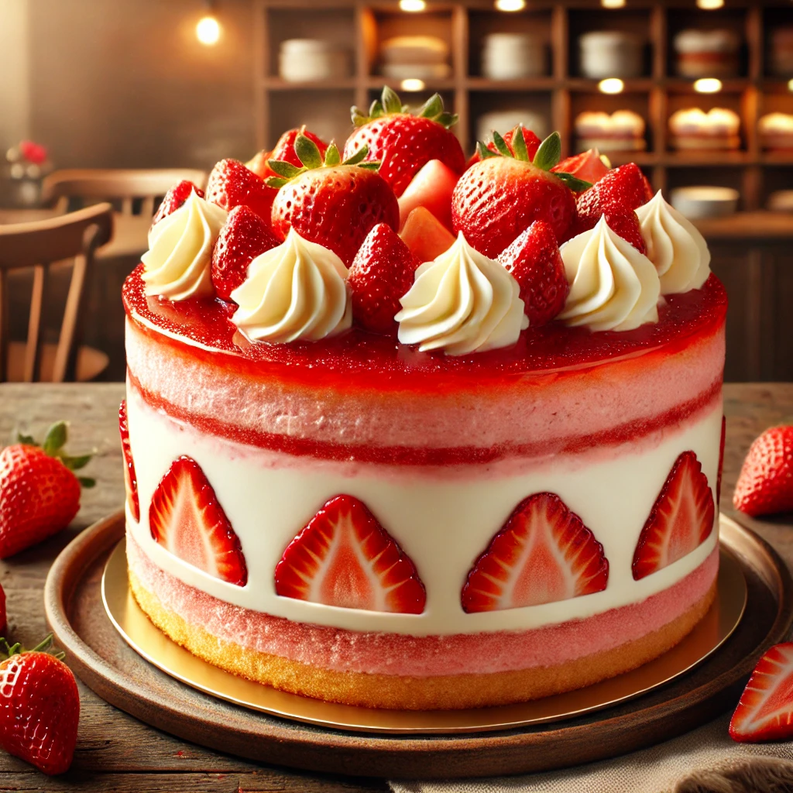
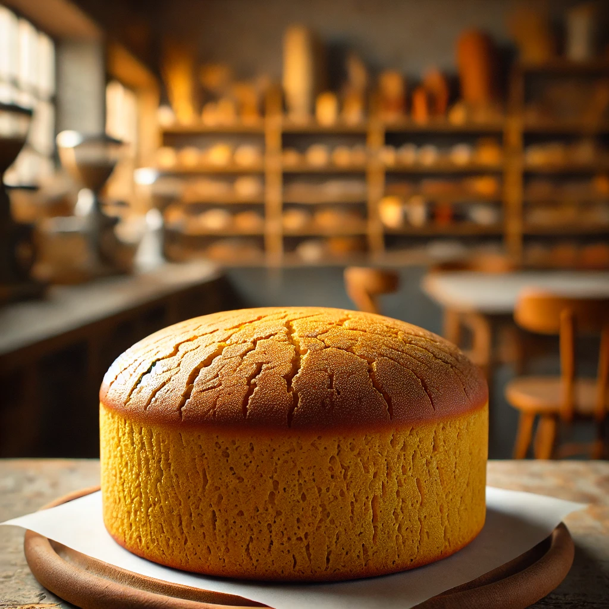
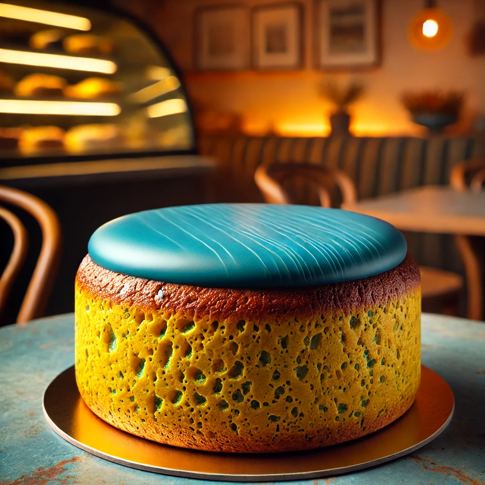
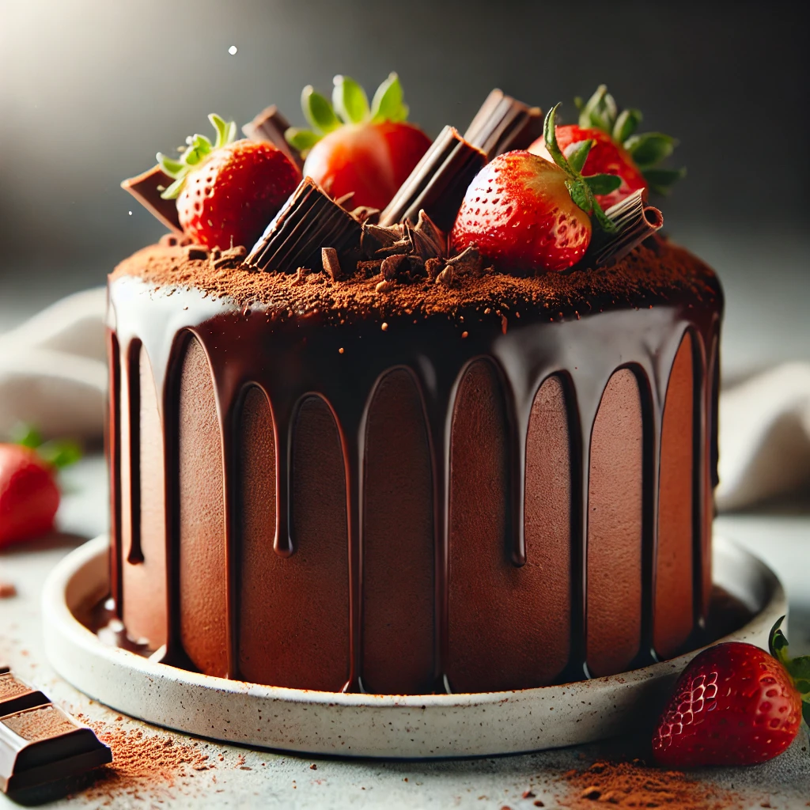
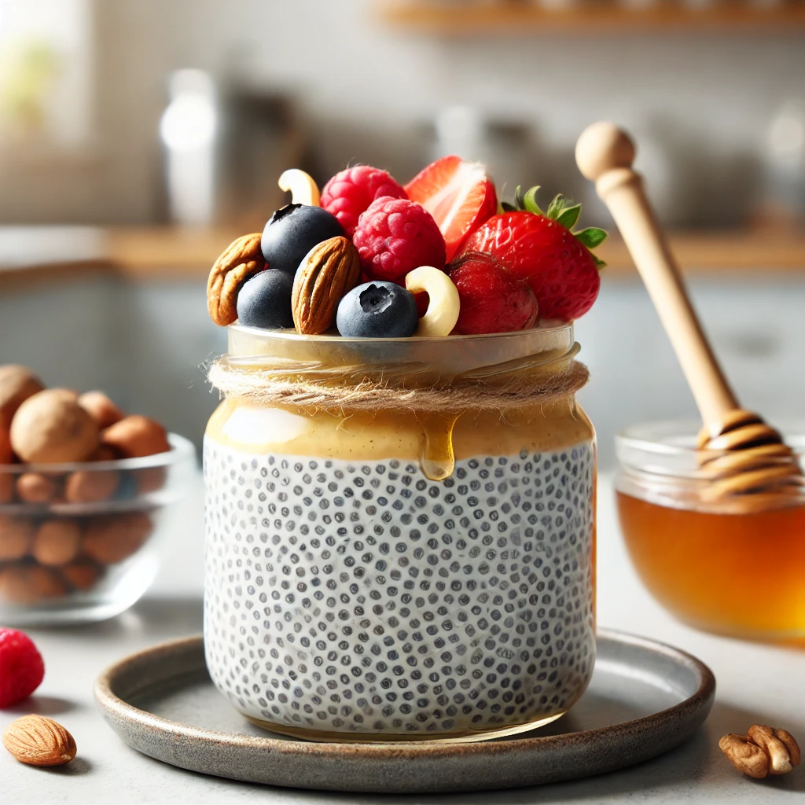
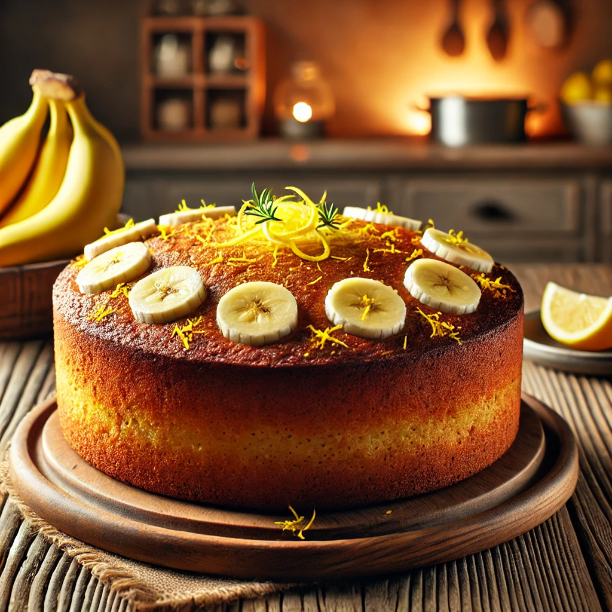
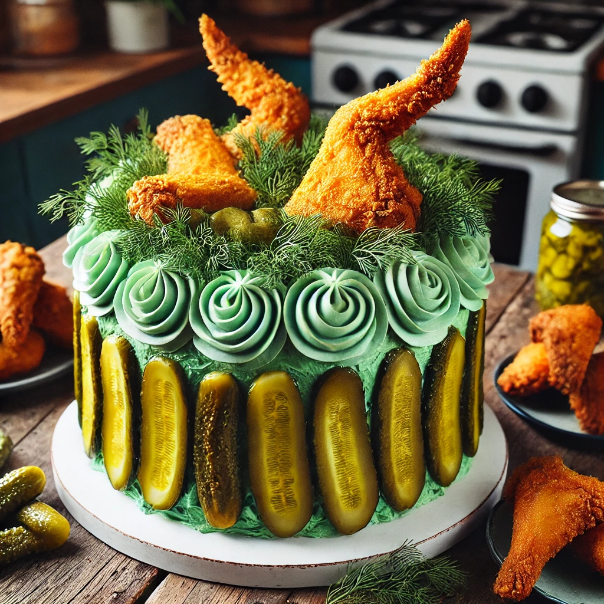
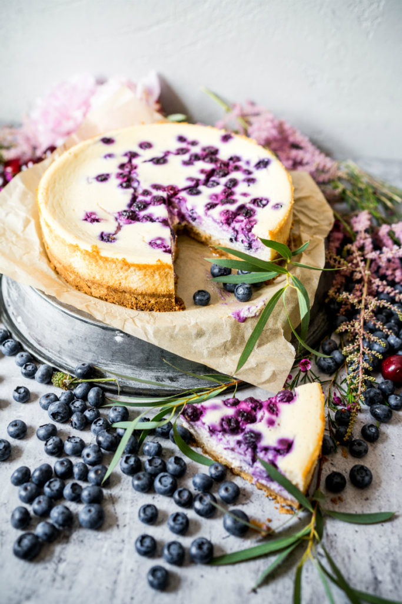

Zemeņu kūka ir garda un viegla kūka, kurā apvienojas maigs biskvīts, krēmīga pildījuma kārta un sulīgas zemenes.
Parasta kūka bro.
JAUNUMS!! Šīs kūkas nopirkšana ļaus mums ziedot cilvēkiem Ukrainā! Parastās kūkas pamats ar garšīgu glazūras uzlējumu!
Bagātīga un maiga kūka ar intensīvu šokolādes garšu. Var būt sulīga ar šokolādes glazūru vai gaisīga ar krēmīgu pildījumu
Veselīgs un krēmīgs deserts, kas pagatavots no chia sēklām un piena vai augu dzēriena. Var būt papildināts ar augļiem, riekstiem un medu, radot vieglu un barojošu našķi.
Aromātiska un mitra kūka, kurā apvienojas banānu dabīgais saldums un citrona svaigais skābums. Itāļu deserts ar maigu maskarpones krēmu, kafijā mērcētiem biskvītiem un vieglu kakao pārslu pārklājumu.
Itāļu deserts ar maigu maskarpones krēmu, kafijā mērcētiem biskvītiem un vieglu kakao pārslu pārklājumu.
Pikanta un neparasta sāļā kūka, kas apvieno sulīgu vistu ar skābenu marinētu gurķu akcentu.
Maiga un samtaina kūka, kas apvieno biezpiena svaigumu ar saldenu garšu. Bieži tiek papildināta ar ogām, augļiem vai šokolādi, radot lielisku balansu.